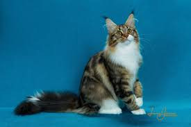
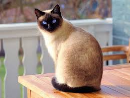
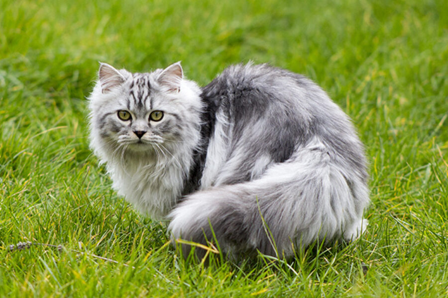
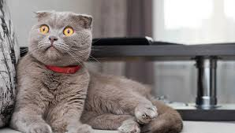
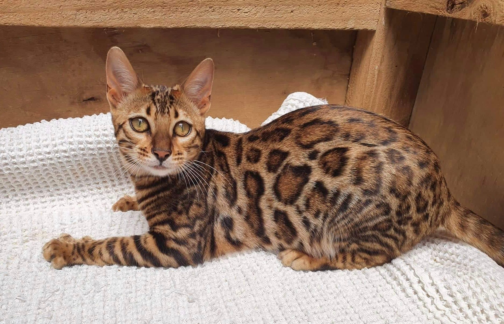

Maine Coon
Maine Coons are large friendly cats known for their playful and gentle personalities.
Learn More
Siamese Cat
Siamese cats are very vocal and social. They are intelligent, affectionate, and enjoy interacting with people.
Learn More
Persian Cat
Persian cats are calm and gentle with long fluffy coats. They enjoy quiet indoor environments and require regular grooming.
Learn More
Ragdoll Cat
Ragdoll cats are known for being very relaxed and affectionate. They often go limp when picked up.
Learn More
Scottish Fold
Scottish Folds are famous for their folded ears. They are sweet, quiet, and very loyal to their owners.
Learn More
Bengal Cat
Bengal cats have a wild-looking spotted coat. They are energetic, curious, and love to play.
Learn More